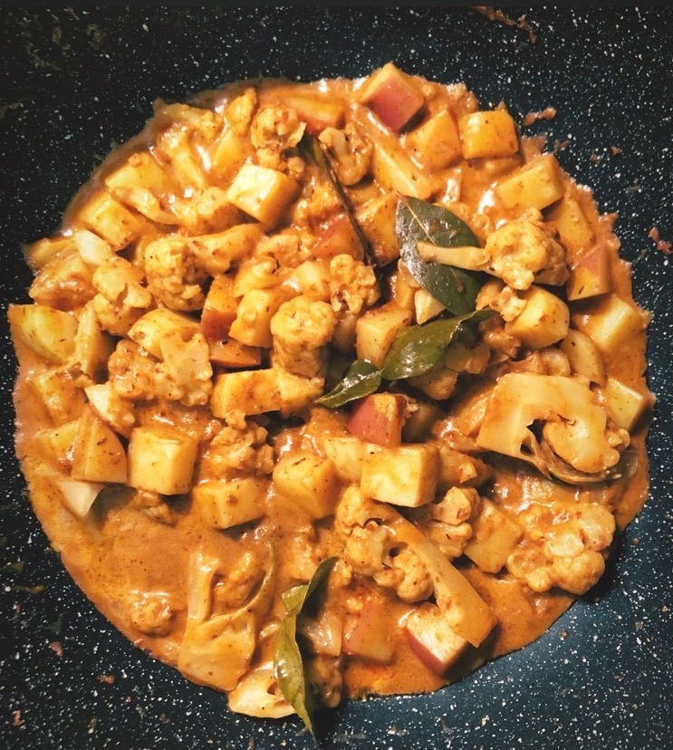

- Spice paste:Put all the ingredients into a small processor or blender and blitz until it is smooth. The ideal time for the paste is a week; however, you can still use it straigh away. The longer you keep, the better it is.
- Boil a big pot of hot water, put cauliflower and potatos and turn off the heat immediately. Stir them for 30 seconds then rinse with cold water. Then let them dry out a bit.
- Heat the oil in a large pan, add the paste and stir it for 1 minute (or until you can feel the smell)
- Add bay leave, lime leave and cinnamon stick, stir it. You can add some water if feel it is too dry.
- Add cauliflower and potatos, stir it evenly then pour the coconut milk, flavour it with sugar and salt, bring to simmer, cover with the lid them cook for 20 minutes.
- I love to add some more turmeric during cooking as it is really good for digestion.
|
 |